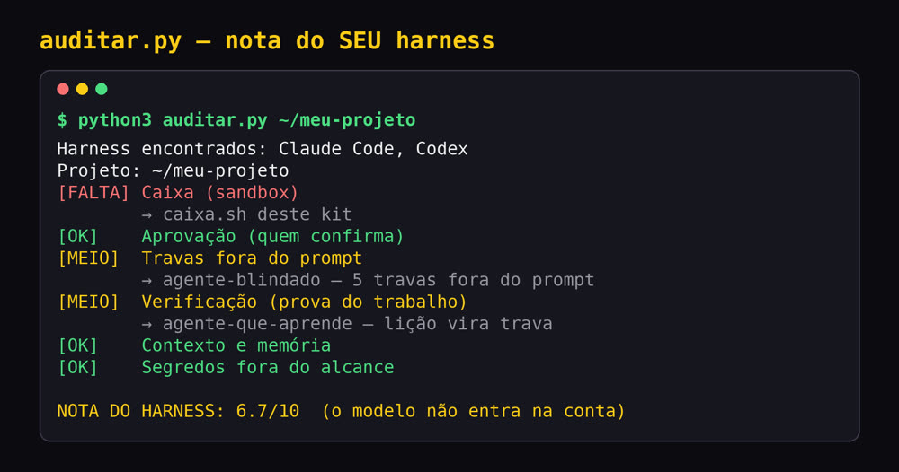
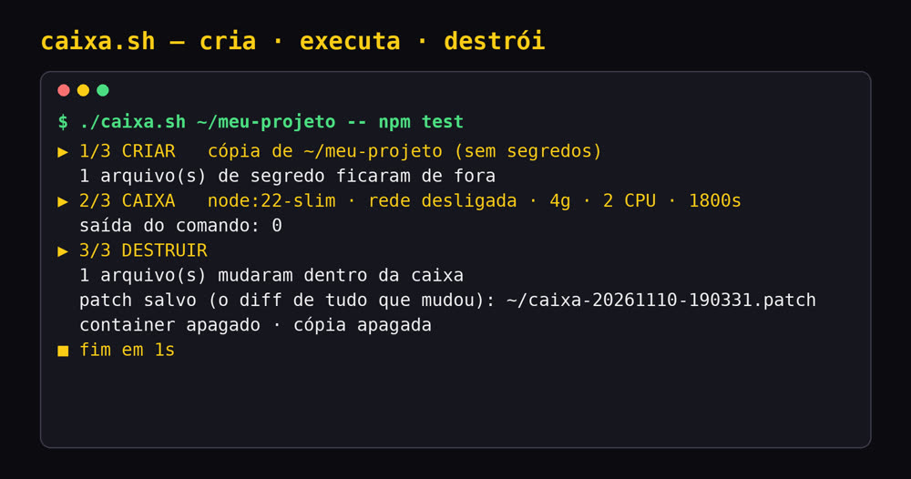

Dê nota ao harness que você já usa e rode qualquer agente numa caixa que nasce, trabalha e é destruída, sem internet (por padrão) e sem os seus arquivos de senha. Com ou sem tela.
A caixa-do-agente é um kit gratuito para quem já usa agentes de IA no computador, como o Claude Code, o Codex ou o DeepSeek Harness. O harness é o software em volta do modelo: ele roda os comandos, controla as permissões e guarda o histórico. O kit dá nota de 0 a 10 ao harness que você usa e roda qualquer agente ou comando numa caixa Docker descartável, sem internet e sem os seus arquivos de senha (.env). Você precisa de Docker e Python 3.
A DeepSeek publicou que o mesmo modelo (V4.1 Flash) acerta 65,6% das tarefas do teste DeepSWE dentro do Codex e 72,6% no modo mais simples do harness dela: quase 9 pontos só trocando o harness (cartão do modelo). Este kit traz essa ideia para a sua máquina.
Lê as configurações do Claude Code, do Codex e do DeepSeek Harness e dá nota de 0 a 10 em 6 camadas: caixa, aprovação, travas, verificação, contexto e segredos. Só lê, não muda nada.
Copia o projeto sem os segredos, roda o comando num container sem rede e com teto de memória, CPU e tempo, mostra o que mudou e apaga tudo. O original só muda com --aplicar.
Cada camada que faltar aponta para um kit INEMA que resolve: travas contra injeção de prompt, lição que vira trava, memória do projeto, DeepSeek Harness local.
É o mesmo ciclo que a DeepSeek usa no treino dos agentes (mais de 380 mil caixas ao mesmo tempo, segundo o artigo dela), em escala de uma pessoa.
Linux com Docker rodando sem sudo (seu usuário no grupo docker). No macOS, instale antes brew install coreutils (traz o gtimeout). O auditor roda até sem Docker.
Para a caixa. Confira se responde:
# comando
docker --versionPara o auditor (sem bibliotecas extras).
# comando
python3 --versionPara copiar o projeto sem os segredos.
# comando
rsync --version | head -1Os comandos usam só o que está no repositório. Os passos 1 a 4, 6 e 7 e o primeiro comando do passo 5 foram rodados nesta máquina em 10/11/2026; os exemplos com Claude Code dependem da sua chave ou login.
Clone o repositório e entre na pasta.
git clone https://github.com/inematds/caixa-do-agente && cd caixa-do-agente
17 checagens (na 1ª vez baixa a imagem node:22-slim, ~250 MB; a checagem do --interativo usa o comando script): .env e chaves ficam fora, rede fechada, original intacto, container apagado, --aplicar funciona, --env repassa só a variável pedida, --interativo abre terminal, cache e node_modules não voltam ao original, --help funciona, e o auditor detecta segredo, sandbox desligado e máquina sem harness.
bash testes/teste.sh # termina com: TUDO OK (17/17)
Aponte para um projeto seu. O auditor lê as configurações do Claude Code, do Codex e do DeepSeek Harness (o agente de código aberto da DeepSeek, comando dsh): ~/.claude/settings.json, ~/.codex/config.toml e ~/.dsh/settings.yaml (se existirem), e o próprio projeto. Caixa, Aprovação e Travas vêm da configuração global somada à do projeto, então projetos na mesma máquina dividem essas três.
Cada camada vale 2 pontos (OK), 1 (MEIO) ou 0 (FALTA); a nota é a soma dividida por 12, vezes 10. Caixa: sandbox ligado em algum harness. Aprovação: nenhum harness no modo "pula tudo". Travas: regras deny (o que o agente nunca pode fazer) e ganchos PreToolUse (script que barra a ação antes). Verificação: testes no projeto e ganchos Stop/PostToolUse (script que confere depois). Contexto: AGENTS.md ou CLAUDE.md. Segredos: nenhum .env ou chave dentro do projeto.
python3 auditar.py ~/meu-projeto # nota de 0 a 10 + o próximo passo de cada camada python3 auditar.py ~/meu-projeto --json # mesma coisa, para usar em script python3 auditar.py --help # o critério de cada camada
Tudo depois de -- roda dentro do container, numa cópia do projeto. Ficam fora da cópia: .env, chaves e credenciais, node_modules e .venv. Sem rede por padrão; se o comando precisa instalar dependências, use --rede.
./caixa.sh ~/meu-projeto --imagem python:3.12-slim -- python3 -m unittest # sem dependências, sem rede ./caixa.sh ~/meu-projeto --rede -- sh -c 'npm install && npm test' # Node: instala e testa dentro da caixa
Agentes precisam falar com o modelo, então use --rede. Há dois jeitos de entrar:
Com chave de API: --env NOME repassa só essa variável do seu terminal para a caixa. No modo sem tela (-p), o Claude Code precisa de permissão para rodar comandos e editar; dentro da caixa descartável dá para liberar tudo, porque o pior caso fica preso nela.
Com a sua assinatura (login): abra o agente com --interativo e faça o login dentro da caixa. O login some quando a caixa é destruída.
Para dar acesso a uma pasta sua, use --montar origem:destino:ro (:ro = só leitura). Os arquivos de senha do projeto continuam fora.
./caixa.sh ~/meu-projeto --rede -- npx -y @deepseek-ai/dsh@latest --help # testado: 1ª vez ~5 min (baixa o pacote) ./caixa.sh ~/meu-projeto --rede --env ANTHROPIC_API_KEY -- npx -y @anthropic-ai/claude-code -p "rode os testes e corrija o que falhar" --dangerously-skip-permissions ./caixa.sh ~/meu-projeto --rede --interativo -- npx -y @anthropic-ai/claude-code # faça o /login dentro
Cada rodada que muda arquivo salva um caixa-AAAAMMDD-HHMMSS.patch: um arquivo de texto com a diferença (o diff) de tudo o que mudou. Ele fica na pasta de onde você rodou o comando (ou na que você indicar com --patch PASTA) e serve para você revisar; não precisa aplicar com git apply. Para copiar as mudanças de volta, use --aplicar (pede confirmação). Arquivos novos e alterados voltam; node_modules, .venv e caches não voltam; arquivo apagado na caixa não é apagado no original.
less caixa-*.patch ./caixa.sh ~/meu-projeto --rede --aplicar -- sh -c 'npm install && npm run format'
Padrão: imagem node:22-slim, 4 GB de memória, 2 CPUs, 30 minutos. Use --imagem quando o comando precisar de outra linguagem ou ferramenta (a imagem do Node não tem make, por exemplo).
./caixa.sh ~/meu-projeto --rede --memoria 8g --cpus 4 --tempo 7200 -- sh -c 'npm install && npm run build' ./caixa.sh ~/meu-projeto --imagem python:3.12 -- make build # imagem completa, com make
Rodados nesta máquina em 10/11/2026.


As mesmas 6 camadas do auditor. Quando uma falta, a seta do auditor aponta para a linha daqui.
.env e chaves fora; o outro kit mostra credenciais fora do chat e do git num uso de segurança defensiva.Docker isola arquivos, rede e recursos, mas divide o núcleo do sistema. Para código em que você não confia nada, use uma VM.
Com --rede, o agente pode enviar para fora o que estiver na cópia. Os segredos já ficaram de fora, o resto não.
Ele lê as configurações mais comuns. Uma nota alta não substitui revisar o que o agente pode fazer.